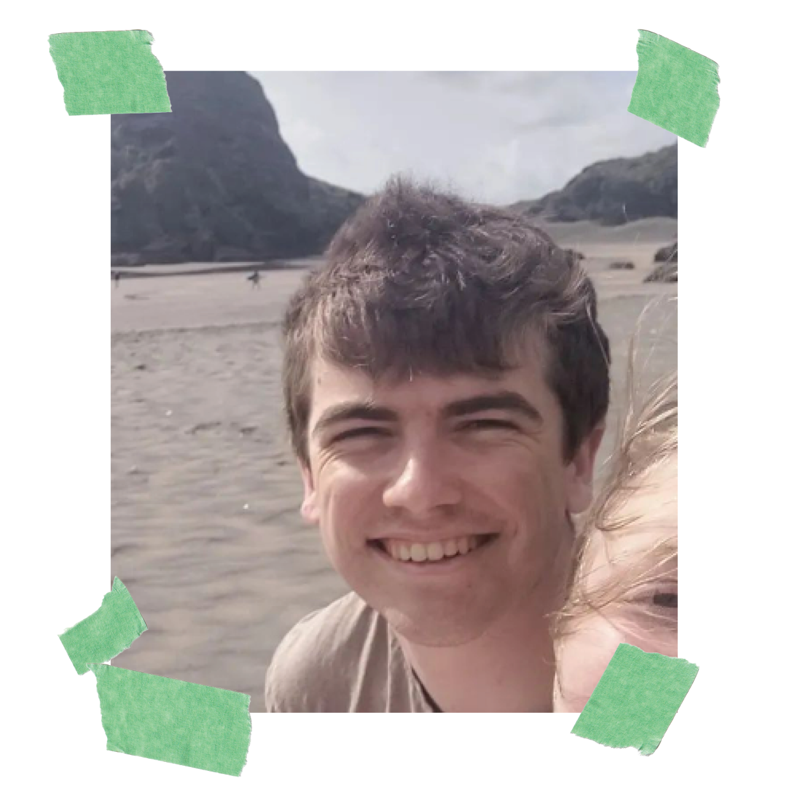

Hey!
| I'm a passionate graphic designer with a hunger to learn, grow and build my skills and technical fluency.
Currently studying a Bachelor of Design and Digital Media at Whitecliffe, but working to one day bring
my diligence and initiative to a packaging design role.
I'm fluent in technical practices using Adobe illustration software, with experience in publication design,
web design, interaction design, photography, videography, animation, brand design, user research, event planning,
product design, packaging design and typographic practices.
Employment history:
11/2018 - 06/2020 Grocery assistant at New World Ngaruawahia:
| Bringing care and organizational abilities to keep supermarket shelves well stocked, assist customer enquiries and maintain the appearance
and standards of the store, continuing work as an essential worker throughout the majority of the first COVID-19 lockdown.
11/2021-06/2022 Retail assistant at Torpedo 7:
| Assisting customers with specialised care and expertise regarding outdoor equipment, keeping brand standards maintained and aisles full,
and supporting potential customers over the phone.
06/2022 - 11/2022 Cleaner at Mint Cleaning:
| Provided professional-grade cleaning to office buildings and medical centres after hours and assisting with the safe disposal of toxic
materials and confidential paperwork.
01/2017-01/2023 Volunteer leader at Christian Youth Camps:
| Leading a cabin of children aged 6-13 through youth holiday programs, providing first aid support, maintaining camp grounds,
cooking and cleaning in a commercial kitchen, running outdoor adventure activities, games, and supporting at-risk kids as an unpaid
role in my school holidays.
02/2023-12/2023 Residential Assistant at Eden Christian Hostel:
| Supporting first-year students in their homes, maintaining the grounds and encouraging healthy community living practices. On
call at all times, and responsible for security and event planning at specific times throughout the year.
Education:
02/2017 - 11/2021 Hamilton Boys' High School:
NCEA Level 3
| Graduated with an overall endorsement of Excellence, and specific Excellence endorsements in Art, Art Design, and Product Design.
Awarded the titles of Best Visual Artist in more than one discipline, and Outstanding Senior Designer.
02/2022 - 12/2024 Whitecliffe College of Arts and Design:
Bachelor of Design and Digital Media (ongoing)
| Working towards achieving my qualification, consistently working at an A level.
Skills:
| Highly organized *****
| Hard worker *****
| Fast learner ****
| Ability to work in a team ****
| Adobe Illustrator ****
| Adobe Photoshop ***
| Adobe InDesign ***
| Figma ***
| First aid ***
| Audience / user research ***
| HTML / CSS **
| Adobe After Effects **
| Adobe Premiere Pro **
| JavaScript *
Other qualifications:
| Comprehensive First Aid Certificate at Meditrain
|
Projects
| Design research blog
| Breakdown
| Iti
| ChromaLogic
|
I like:
| Walking
| Cooking
| Sci-fi
| Music
| Plants
| My fiance